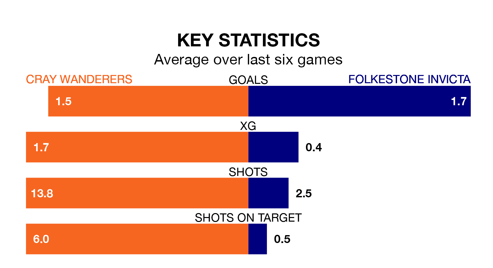

Folkestone Invicta travel to Cray Wanderers on Sunday in the Isthmian Premier Division.
The visitors come into the game on the back of a win in their last match, having beaten Canvey Island 1-0 at home.
Cray also won their last match, 4-0 against Haringey Borough.
In the last 10 years, Cray and Folkestone Invicta have played each other on seven occasions. They won two each, and they drew three times.
On average, Cray scored 1.9 goals and Folkestone Invicta 1.6 in those matches.
Their last meeting was on February 6, when they played out a 2-2 draw.
Folkestone Invicta are 17th in the table after 33 games, of which they have won 10 and drawn nine, earning 39 points.
Cray are three places ahead of the visitors in 14th, with 12 wins and nine draws putting them on 45 points.
With 43 goals in 34 games so far this season, Wanderers are scoring at below the league average rate with 1.3 goals per game. But they are conceding fewer than average too, letting in 48 goals at a rate of 1.4 per game.
Folkestone Invicta are also below average scorers, with 1.4 goals per game, compared to a league average of 1.6. They have conceded 1.6 goals per game.
The home side are in reasonable form in the Isthmian Premier Division, with four wins and two losses from their last six games.
With three wins and two draws over that period, Folkestone Invicta's form is slightly worse – they have taken 11 points from 18, compared to Cray's 12.
Updated: 10:19 (UTC), 22/03/24